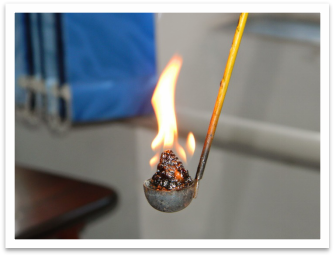
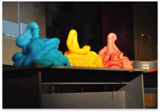
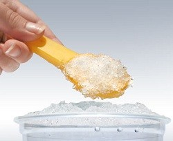

Experimente
Echipament de protecție: halat, mănuși, ochelari.
Degajare de Hidrogen
Ustensile necesare:
-pisetă, pară, chibrituri, vas Erlenmayer.
Vom avea nevoie de hidroxid de sodiu, apă distilată și folie de aluminiu.
Mod de executare:
-din folia de aluminiu se vor face biluțe de aluminiu de mărimi mici.
-hidroxidul de sodiu se toarnă peste apa distilată din vas, folosind para.
-se vor pune biluțele de aluminiu peste soluție; dupa aceasta acoperim palma și așteptăm pentru a se descompune aluminiul.
După ce observăm gazul din vas, luăm mâna și aprindem un băț de chibrit deasupra acestuia.
Arderea zahărului

Ustensile necesare:
-trepied, castron, spatulă.
Vom avea nevoie de zahăr pudră, acid sulfuric si clorură de potasiu.
Mod de executare:
-punem o cantitate mică de zahăr pudră în castron.
-peste zahăr, adăugăm clorura de potasiu.
-peste amestec vom turna acid sulfuric pentru a aprinde reacția.
Stările de oxidare ale permanganatului de potasiu (KMnO4)(semaforul chimic)

Ustensile necesare:
-vas Endlermayer, pisetă, spatulă, eprubetă.
Vom avea nevoie de zahăr pudră, hidroxid de sodiu, apă distilată si KMnO4.
Mod de executare:
-turnăm apa distilată în vas.( înălțimea apei va fi de 2 degete)
-dizolvăm zahărul în vas.
-turnăm hidroxid de sodiu peste amestec.(5mL)
-în eprubetă vom pregăti soluția de KMnO4: vom dizolva KMnO4 folosind hidroxid de sodiu(NaOH).
-turnăm soluția în vas.
-agităm vasul.
Vom observa culorile soluției: verde, galben și la final, roșu aprins.
La final, spălăm ustensilele.
Pasta de dinți a elefantului

Ustensile necesare:
-vas Endlermayer, pisetă, eprubetă.
Vom avea nevoie de apă oxigenată(H2O2), iodură de potasiu(KI) și săpun lichid.
Mod de executare:
-turnăm H2O2 în vas(h=2 degete).
-adăugăm săpun pentru volum.
-în eprubetă vom pune KI; adăugăm apă distilată folosind piseta, după care agităm, rezultând o reacție endotermă.
-soluția obținută se pune peste amestecul din vas.
*** apa oxigenată, având concentrația 30% decolorează.
Vulcanul chimic
Ustensile necesare:
-trepied, castron, chibrit, spatule.
Vom avea nevoie de bicromat de amoniu((NH4)2Cr2O7).
Mod de executare:
-bicromatul de amoniu se asează în castron sub formă de vulcan, cu ajutorul spatulei.
-după aceasta se aprinde folosind chibritul.Este o reacție exotermă.
Pudra obținută se folosește pentru a da culoare dolarului american.
Zăpada artificială

Ustensile necesare:
-pahar berzelius, apă.
Vom avea nevoie de poliacrilat de sodiu(C3H3NaO2)n.
Mod de executare:
-punem apa în pahar.
-adăugăm poliacrilat de sodiu peste apă.
-amestecăm.
Lava lamp
Ustensile necesare:
-pahar berzelius.
Vom avea nevoie de albastru de metilen sau orice alt colorant, ulei și pastile efervescente.
Mod de executare:
-turnăm albastru de metilen în pahar.
-adăugăm ulei peste.
-mărunțim o pastilă efervescentă; punem pastila peste amestec.
Descompunerea poliesterului în acetonă(C3H6O)
Ustensile necesare:
-pahar berzelius.
Vom avea nevoie de acetonă și poliester.
Mod de executare:
-turnăm acetona în pahar.
-adăugăm bilele de poliester.
Licuricii chimici
Ustensile necesare:
-pahar berzelius(pentru protecție), eprubete perfect uscate, pară, spatulă.
Vom avea nevoie de acid sulfuric(H2SO4), alcool etilic, permanganat de potasiu(KMnO4).
Mod de executare:
-folosind para, vom pune acid sulfuric în pahar.
-vom pune acid sulfuric în eprubetă.
-peste, vom pune alcool etilic.
-în eprubetă adăugăm KMno4.
-punem eprubeta în pahar, urmîând o reacție exotermă.
Descompunerea apei oxigenată
Ustensile necesare:
-vas Endlermayer, spatulă și pară.
Vom avea nevoie de apă oxigenată, oxid de mangan.(MnO2)
Mod de executare:
-turnăm 10 mL apă oxigenată în vas, folosind para.
-cu ajutorul spatulei, punem oxid de mangan.
Va rezulta o reacție exotermă.